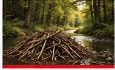
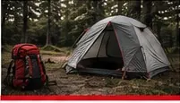
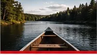
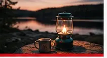

Adventure
Outdoor experiences that challenge and inspire.
Prepared. For life.
Scouting helps youth develop practical skills, make lasting friendships and become the leaders of tomorrow.
Outdoor experiences that challenge and inspire.
Building strong friendships that last a lifetime.
Developing skills for today and tomorrow.
Making a positive impact in our community.
Our sections
From Beavers to Rovers, we offer programs for every age and stage of the Scouting journey.
View All Sections →
Fun, friendship and first adventures.
→Building skills and exploring the outdoors.
→
Adventure, challenges and personal growth.
→
Leadership, travel and new experiences.
→
Leading the way and giving back.
→Trail Ready Program
Our gear lending and rental initiative helps remove barriers so every youth can experience the outdoors.